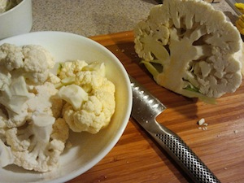
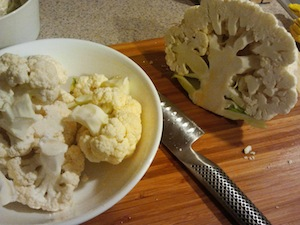
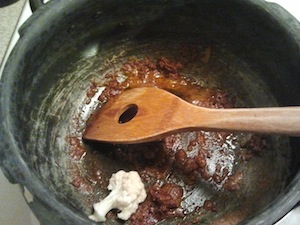
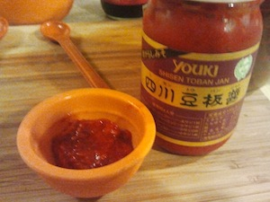
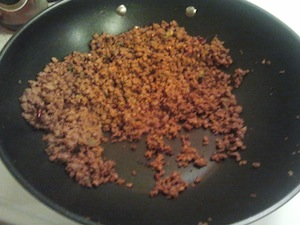
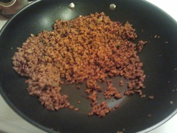
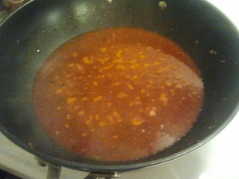

レシピ集
ベジタリアン中心のレシピ、だいたい借り物か盗作。
アルゴビ (カリフラワーとジャガイモ)
6人分
材料
- カリフラワー 1つ
- 赤ジャガイモ 2つ
- ショウガ 1かけ (ニンニク 1かけと同量)
- クミンシード 小さじ1
- ヒング (アサフェティダ) 小さじ1/4
- ターメリック 小さじ1/2
- コリアンダーパウダー 小さじ2 (もしくはコリアンダーパウダーとクミンパウダーを混ぜたもの)
- カエンペッパー 小さじ1
- ガラムマサラ 小さじ1/2
- 塩 小さじ2
- ごま油 大さじ2
- パクチー 適量 (コリアンダーの葉)
手順
- カリフラワーは半分に切った後、手で小房に分けて、大きいものは一口大に切る。
 


- ジャガイモは芽をくり抜いた後、皮付きのまま 1 cm のさいの目に切る。


- ショウガの皮をむき、すりおろす。


- 厚手の鍋にごま油を熱し、クミンシードを加える。


- ヒング、すりおろしたショウガを加えよく混ぜる。


- ターメリック、コリアンダーパウダー、カエンペッパーを加え混ぜる。
 - 火を弱めの中火まで弱め、カリフラワー、ジャガイモ、塩を加えよく混ぜる。

- フタをして 7分蒸し焼きにした後、フタ付きのまま鍋を激しく振って (もしくはフタを開けて混ぜて)、もう 7分蒸し焼きにする。

- ガラムマサラを振りかけて、混ぜ、フタをしてもう 5分蒸し焼きにする。
- ざく切りにしたパクチーとともに盛り付ける。

備考
このレシピは Sookhi Gobhi Aloo からもらってきた。
ベジタリアン麻婆豆腐
4人前
材料
- 万能ネギ 4本 (または長ネギ 2本)
- ニンニク 2かけ
- ショウガ 2かけ
- 野菜固形ブイヨン 1つと水 2 カップ (または野菜だし 2 カップ)
- 甜麺醤 大さじ1 (または海鮮醤)
- 酒 大さじ1
- 醤油 小さじ1
- 豆板醤 大さじ1
- 唐辛子 2つ
- 花椒 大さじ2 (四川山椒)
- 絹ごし豆腐 2パック
- ひき肉タイプの肉もどき 1パック (340 g) グルテンバーガーなど
- 片栗粉 大さじ2
- サラダ油 適量
- ごま油 適量
手順
- ネギは小口切りにする。


- ニンニク、ショウガの皮をむき、すりおろす。


- 野菜固形ブイヨンと水を 2分電子レンジにかけた後、ブイヨンを潰す。
- スープベースに甜麺醤、酒、醤油を加える。

- 豆板醤は小さなボウルに移しておく。
 - 唐辛子を小口切りにする。

- すり鉢で花椒をすりつぶす。


- 肉もどきを開けておく。

- 絹ごし豆腐を開け、余計な水を捨て、3 cm のさいの目切りにする。ただし二段にする必要はない。
- 中華鍋を強めの中火で温め、サラダ油を加え、すりおろしたショウガ、ニンニク、それとネギの半量を加える。

- ニンニクの香りが立ってきたら (約30秒)、鍋の半分を空け、豆板醤を加える。

- そのまま豆板醤の底の色が変わって鍋に付くまで火を通し (約1分)、お玉かヘラを使って鍋から豆板醤をこそげ取る。
- 肉もどきを中華鍋に加え、バラバラになるまで潰し、よく混ぜ、底がカリッとなるまでよく火を通す。
 

- スープベースを加え、よく混ぜ、煮立たせる。
 - 慎重に豆腐を加え、そっと混ぜて豆腐がスープに浸るようにした後、火を弱めの中火まで落とし 2分ほど煮込む。

- 豆腐を煮てる間に、片栗粉と同量の水を混ぜておく。

- 一度豆腐を火から下ろし、片栗粉を解いた水を回しかけた後、手早く混ぜる。

- 豆腐を強火にかけ、スープにとろみが付くまでぐつぐつ煮る。
- 火を止め、ごま油を回しかける。


- 残りのネギと花椒とともに盛り付ける。

備考
食材の調達で問題となりそうなのは野菜固形ブイヨン、花椒、肉もどきだけど、これらはオンラインからも入手できるみたいだ。これらの製品は試したことがないので味の保証はできない: